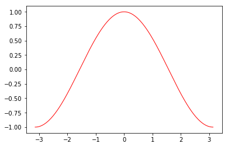
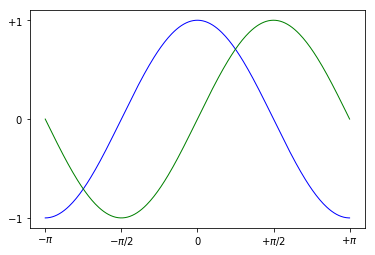
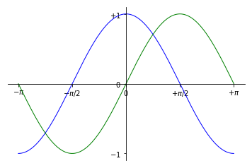
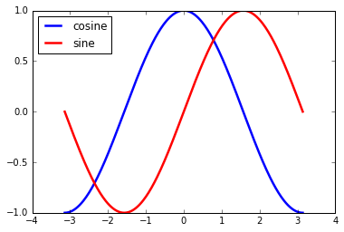
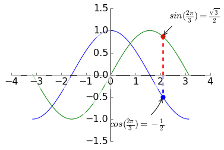

import pylab as pl
import numpy as np
#在-pi至pi之间产生256个数
X = np.linspace(-np.pi, np.pi, 256, endpoint=True)
#计算X的sine与cosine值
C, S = np.cos(X), np.sin(X)
#绘制曲线
pl.plot(X, C)
pl.plot(X, S)
pl.show()

# 创建一个大小为 8X6 英寸，每英寸80个点的图片
pl.figure(figsize=(8, 6), dpi=80)
# 从1X1的网格创建一个子图片
pl.subplot(1, 1, 1)
# 用宽度为1（像素）的蓝色连续直线绘制cosine
pl.plot(X, C, color="blue", linewidth=1.0, linestyle="-")
# 用宽度为1（像素）的绿色连续直线绘制sine
pl.plot(X, S, color="green", linewidth=1.0, linestyle="-")
# 设置x轴的极值
pl.xlim(-4.0, 4.0)
# 设置x轴的刻度值
pl.xticks(np.linspace(-4, 4, 9, endpoint=True))
# 设置y轴的极值
pl.ylim(-1.0, 1.0)
# 设置y轴的刻度值
pl.yticks(np.linspace(-1, 1, 5, endpoint=True))
# 用72dpi保存图片
# savefig("exercice_2.png", dpi=72)
# 在屏幕上显示结果
pl.show()

#改变曲线颜色
pl.plot(X, C, color="red", linewidth=1.0, linestyle="-")
pl.show()

#设置极值，以减少空白，扩大数据显示
pl.xlim(X.min() * 1.1, X.max() * 1.1)
pl.ylim(C.min() * 1.1, C.max() * 1.1)
# 用宽度为1（像素）的蓝色连续直线绘制cosine
pl.plot(X, C, color="blue", linewidth=1.0, linestyle="-")
# 用宽度为1（像素）的绿色连续直线绘制sine
pl.plot(X, S, color="green", linewidth=1.0, linestyle="-")
pl.show()

#设置坐标刻度值
pl.xticks([-np.pi, -np.pi/2, 0, np.pi/2, np.pi])
pl.yticks([-1, 0, +1])
#设置刻度标签
pl.xticks([-np.pi, -np.pi/2, 0, np.pi/2, np.pi],
[r'$-\pi$', r'$-\pi/2$', r'$0$', r'$+\pi/2$', r'$+\pi$'])
pl.yticks([-1, 0, +1],
[r'$-1$', r'$0$', r'$+1$'])
# 用宽度为1（像素）的蓝色连续直线绘制cosine
pl.plot(X, C, color="blue", linewidth=1.0, linestyle="-")
# 用宽度为1（像素）的绿色连续直线绘制sine
pl.plot(X, S, color="green", linewidth=1.0, linestyle="-")
pl.xlim(X.min() * 1.1, X.max() * 1.1)
pl.ylim(C.min() * 1.1, C.max() * 1.1)
pl.show()

#移动坐标轴
#默认有四根，上、下、左、右，这里只保留左和下，并将它移动到图中间
ax = pl.gca() # gca stands for 'get current axis'
ax.spines['right'].set_color('none')
ax.spines['top'].set_color('none')
ax.xaxis.set_ticks_position('bottom') #标签显示位置
ax.spines['bottom'].set_position(('data',0)) #轴位置
ax.yaxis.set_ticks_position('left')
ax.spines['left'].set_position(('data',0))
#设置坐标刻度值
pl.xticks([-np.pi, -np.pi/2, 0, np.pi/2, np.pi])
pl.yticks([-1, 0, +1])
#设置刻度标签
pl.xticks([-np.pi, -np.pi/2, 0, np.pi/2, np.pi],
[r'$-\pi$', r'$-\pi/2$', r'$0$', r'$+\pi/2$', r'$+\pi$'])
pl.yticks([-1, 0, +1],
[r'$-1$', r'$0$', r'$+1$'])
# 用宽度为1（像素）的蓝色连续直线绘制cosine
pl.plot(X, C, color="blue", linewidth=1.0, linestyle="-")
# 用宽度为1（像素）的绿色连续直线绘制sine
pl.plot(X, S, color="green", linewidth=1.0, linestyle="-")
pl.xlim(X.min() * 1.1, X.max() * 1.1)
pl.ylim(C.min() * 1.1, C.max() * 1.1)
pl.show()

#添加图例
pl.plot(X, C, color="blue", linewidth=2.5, linestyle="-", label="cosine")
pl.plot(X, S, color="red", linewidth=2.5, linestyle="-", label="sine")
pl.legend(loc='upper left')
pl.show()

#标注
t = 2 * np.pi / 3
pl.plot([t, t], [0, np.cos(t)], color='blue', linewidth=2.5, linestyle="--")
pl.scatter([t, ], [np.cos(t), ], 50, color='blue')
pl.annotate(r'$sin(\frac{2\pi}{3})=\frac{\sqrt{3}}{2}$',
xy=(t, np.sin(t)), xycoords='data',
xytext=(+10, +30), textcoords='offset points', fontsize=16,
arrowprops=dict(arrowstyle="->", connectionstyle="arc3,rad=.2"))
pl.plot([t, t],[0, np.sin(t)], color='red', linewidth=2.5, linestyle="--")
pl.scatter([t, ],[np.sin(t), ], 50, color='red')
pl.annotate(r'$cos(\frac{2\pi}{3})=-\frac{1}{2}$',
xy=(t, np.cos(t)), xycoords='data',
xytext=(-90, -50), textcoords='offset points', fontsize=16,
arrowprops=dict(arrowstyle="->", connectionstyle="arc3,rad=.2"))
#默认有四根，上、下、左、右，这里只保留左和下，并将它移动到图中间
ax = pl.gca() # gca stands for 'get current axis'
ax.spines['right'].set_color('none')
ax.spines['top'].set_color('none')
ax.xaxis.set_ticks_position('bottom') #标签显示位置
ax.spines['bottom'].set_position(('data',0)) #轴位置
ax.yaxis.set_ticks_position('left')
ax.spines['left'].set_position(('data',0))
# 用宽度为1（像素）的蓝色连续直线绘制cosine
pl.plot(X, C, color="blue", linewidth=1.0, linestyle="-")
# 用宽度为1（像素）的绿色连续直线绘制sine
pl.plot(X, S, color="green", linewidth=1.0, linestyle="-")
#设置所有标签背景半透明效果
for label in ax.get_xticklabels() + ax.get_yticklabels():
label.set_fontsize(16)
label.set_bbox(dict(facecolor='white', edgecolor='None', alpha=0.65))
pl.show()

Comments